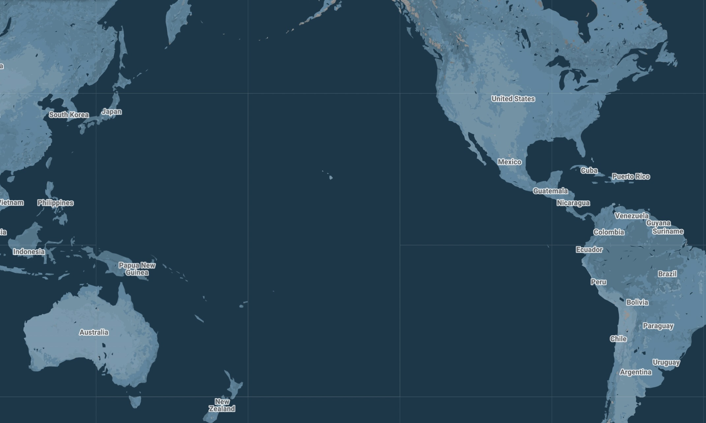
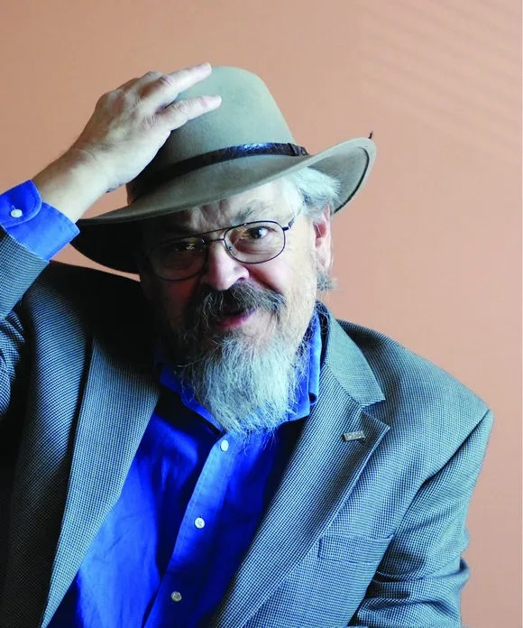
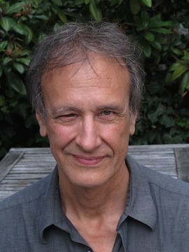
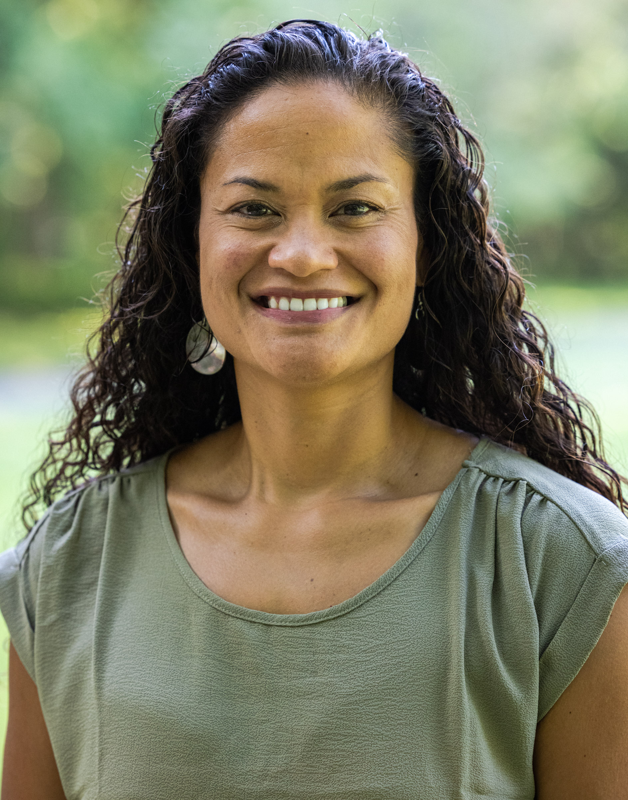

Read above is Yale University's land acknowledgment— the way you've heard it spoken aloud at the start of public events, ceremonies, or meetings on campus. Land acknowledgments are formal statements recognizing the Indigenous peoples who have long stewarded a place, and whose presence endures today. Yet the acknowledgment names nations most Yalies have never seen on a map.
This is the story of how those nations, and many, many more, converge on one house at 26 High Street.

Yale was founded in 1701 on Quinnipiac land. From its earliest years, its relationships with Indigenous peoples was shaped more by extraction than exchange— through missionization, the near-total exclusion of Native students from its classrooms, and the accumulation of Native ancestral remains and sacred objects, where repatriation work is still ongoing.

In 1906, more than two hundred years after Yale's founding, Henry Roe Cloud (Ho-Chunk) became one of the first known Native students at Yale. For decades, students like him arrived alone.

Then slowly, a few more arrived:
1960 — Philip S. (Sam) Deloria (Standing Rock Sioux Tribe, Yankton Dakota) arrives at Yale College, later returning for law school. He goes on to become a leading figure in Native American policy.

1967 — Linc Kesler (Oglala Lakota from Pine Ridge, South Dakota) enters Yale, graduating in 1971. He goes on to found the First Nations Studies Programs (now First Nations and Indigenous Studies) at the University of British Columbia.

1969 — Allison Boucher Krebs, also known as "Ally" and "Chi-Gaumee-Kwe," (Sault Ste. Marie Tribe of Chippewa Indians in Michigan) is admitted in the first class of women undergraduates at Yale. She becomes a lifelong advocate for Indigenous archives and youth.
The late 1960s shook up American campuses. The Civil Rights movement, anti-war protests, and the rise of the Red Power movement— Alcatraz in 1969, Wounded Knee in 1973, all pushed universities to confront the narratives they taught and which students they served.
At Yale, students of color began organizing for cultural centers of their own. The Afro-American Cultural Center, also known as The House, opened in 1969, with La Casa Cultural following in 1977, and the Asian American Cultural Center in 1981. For Native students, no such space existed yet.
But the community was still growing, and a network was forming. Through the 1980s and 90s, a generation of students, scholars, and staff worked on filling that institutional gap, one course, organization, and hire at a time.
In 1989, John Bathke (Yale '93, Diné) founded the Association of Native Americans at Yale (ANAAY), the first formal Native student organization on campus, today known as Native and Indigenous Student Association at Yale (NISAY). Four years later, Dean Shannon Salinas granted ANAAY a single room inside the Chicano Cultural House (today merged into La Casa Cultural), affectionately referred to as the "Native American Cultural Center."
Not long after, Jace Weaver (Cherokee) joined the faculty as Yale's first Native scholar in 1996. Rick Chavolla (Kumeyaay/Chicano) followed in 1997.
Students kept advocating. Demonstrations, op-eds, sit-ins and meetings with administrators emphasized the importance of cultural centers, and demands for a permanent NACC space on campus and institutional recognition. In 1999, after the NACC moved to the third floor of the Asian American Cultural Center and gained access to four more rooms, a sign for the NACC went up outside of the AACC, officially recognizing the space by Yale administration, with Chavolla assuming role as first director of the NACC. But the NACC still had no building center of its own.
The following decade became about taking up and holding space. Alyssa Mt. Pleasant (Tuscarora) became the first Native faculty member dedicated to Native American Studies in 2006. Shelly Lowe (Diné) became the NACC's first sole director in 2007. And in 2009, Ned Blackhawk (Western Shoshone) arrived as the first Native faculty member granted tenure at Yale.
Finally, in 2013, two years after the announcement of a creation of the space, the Native American Cultural Center opened its doors at 26 High Street.

And continued to grow. Through the 2010s, a succession of Native deans and assistant directors reshaped what the space meant and could hold. In 2016, Kapi'olani Laronal (Kanaka Maoli, Haida/Tsimshian tribes of Alaska) became the first assistant director to the space, bringing Native Hawaiian and Pacific Islander community formally into the center.

And the story of 26 High Street is still being written. With each new class, the space is left changed.
Presence of inidgenous on campus larger than ever
Special Thanks
This project would not exist without Mara Gutierrez— her assistance over text, and her stunning, deeply researched thesis on the NACC and Indigenous presence at Yale made much of this story possible.
The depth of her archival work was astounding, and her presence at Yale, the NACC, and my life has been nothing but warm.
To Joshua Ching, for consulting on this project and being an always steady source of inspiration during my time here.
To Zitlali Garcia Mondragon, who helped begin to imagine a visual telling of this story alongside Mara, Josh, and me last year!
To the Native American Cultural Center at 26 High St. and the people who make it what it is— especially Dean M and AD Denise Morales!
To Professor Aaron Reiss for his continued support and guidance that carried this project!
And to the kūpuna, ancestors, and elders— every person who has paved the way at this institution and carried this work forward so that I could stand here now! Mahalo.
Technical credits: https://www.gingko.pro/ for itʻs helpful horizontal scroll implementation I referenced; datawrapper for the first map's basemap; https://native-land.ca/ for tribal location reference, https://www.travelalaska.com/things-to-do/alaska-native-culture/cultures/tlingit-haida-eyak-tsimshian for information on tribal residencies, Google My Maps for second map basemap and plotting.
Research credits: Mara Gutierrez '25 senior thesis, “Small and Mighty: The Evolution of the Native Community at Yale”
https://news.yale.edu/2010/10/29/yale-celebrates-first-native-american-graduate-henry-roe-cloud
https://yaledailynews.com/articles/a-native-place
Note: Due to time constraints,